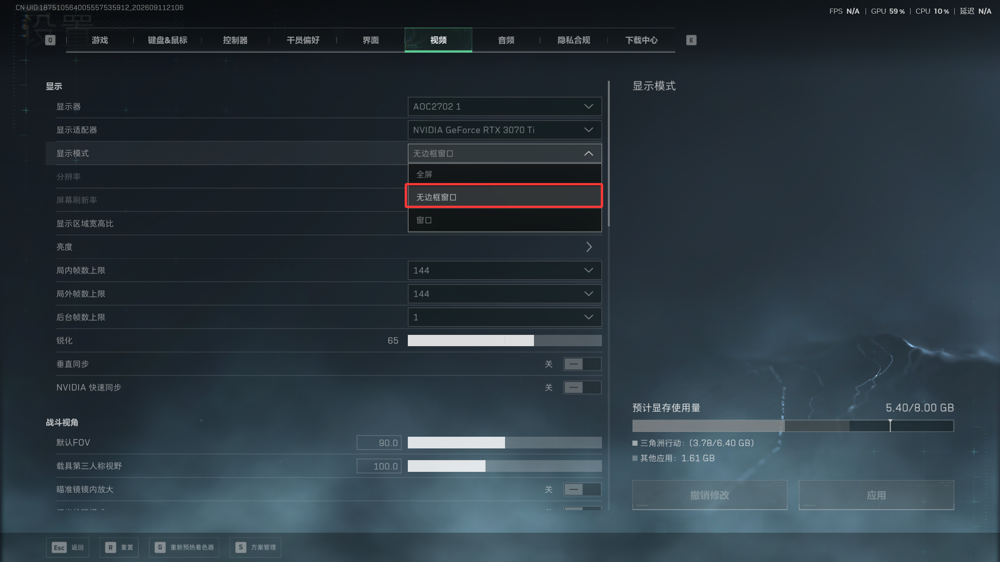

01 / 曲谱整理
MIDI 变成
可演奏旋律
自动推荐旋律音轨，过滤打击乐，支持钢琴连奏与原谱分音；导入后可以按需要移调和调整速度。
WINDOWS 工具 · 当前版本 v0.13
三角洲口风琴把 MIDI 和简谱整理成八键演奏，配合游戏内悬浮窗、全局热键和可定位播放，让练习与演奏更顺手。

SEE IT IN ACTION
从软件界面到游戏内演奏，用一段实录了解三角洲口风琴的功能与操作。
点击播放后才加载视频，不自动播放。
WHY IT WORKS
从曲谱整理、播放定位到切回游戏，常用操作都集中在一个轻量工具里。
01 / 曲谱整理
自动推荐旋律音轨，过滤打击乐，支持钢琴连奏与原谱分音；导入后可以按需要移调和调整速度。
02 / 游戏协同
透明观看窗显示曲目、进度与当前音键。进入目标游戏后自动显示，切出时自动隐藏。
03 / 精确播放
支持暂停续播、拖动进度和多段片段；改速后仍按原曲时间记忆片段范围。
START IN A MINUTE
程序无需联网运行；也可以打开线上曲库下载 MIDI 到本地。第一次使用时，建议先用内置的音阶校准确认游戏音键。
从线上曲库下载 MIDI，或导入本地 MIDI、输入以空格分隔的简谱。程序会复制曲库文件，不会改动原文件。
选择演奏音轨，按需要调整速度、移调和片段，再用本机试听确认旋律。
按 F8 开始、F8 暂停／继续，F9 停止归零；F10／F11 调速，F4／F5 移调。
KEY MAP
可以在程序设置中修改八个音键、基准音高以及鼠标变音键。进入游戏前请切换到英文输入状态。
IMPORTANT
为了让悬浮窗稳定显示在游戏上方，请先在游戏设置中完成下面这项调整。

PLEASE READ
下载和运行前，请确认你理解下面的输入方式、权限要求以及游戏规则风险。
程序通过 Windows SendInput 模拟键盘和鼠标操作，需要管理员权限。请仅在你有权操作的环境中使用。
游戏规则、平台检测、账号处罚和权限冲突等外部风险由用户自行判断和承担，请先查阅游戏官方规则。
程序不会读取或修改游戏进程内存，也不保证在所有游戏版本、窗口模式或输入法环境下稳定运行。
使用前退出同类助手、切换英文输入状态并确认无边框窗口；出现异常时立即按 F9 停止演奏。
三角洲口风琴是独立开源工具，与《三角洲行动》及其开发商、发行商、运营方不存在隶属、授权或官方合作关系。页面中的游戏画面和名称仅用于说明工具使用场景。软件按“现状”提供，不承诺持续可用、兼容所有环境或满足特定目的。因使用或无法使用本软件产生的账号、数据、设备、游戏体验或其他损失，由使用者自行承担；使用前请确认符合当地法律、软件许可和游戏服务条款。
LATEST RELEASE
最新版内置夜莺、守望、风起、破晓四首解锁乐曲，并修复简谱输入窗口的保存按钮显示问题。支持线上曲库搜索、分页下载、片段播放及游戏悬浮窗。
下载 Windows 版首次启动会出现 Windows 权限确认。若旧版正在运行，请先从系统托盘退出，再打开新版。